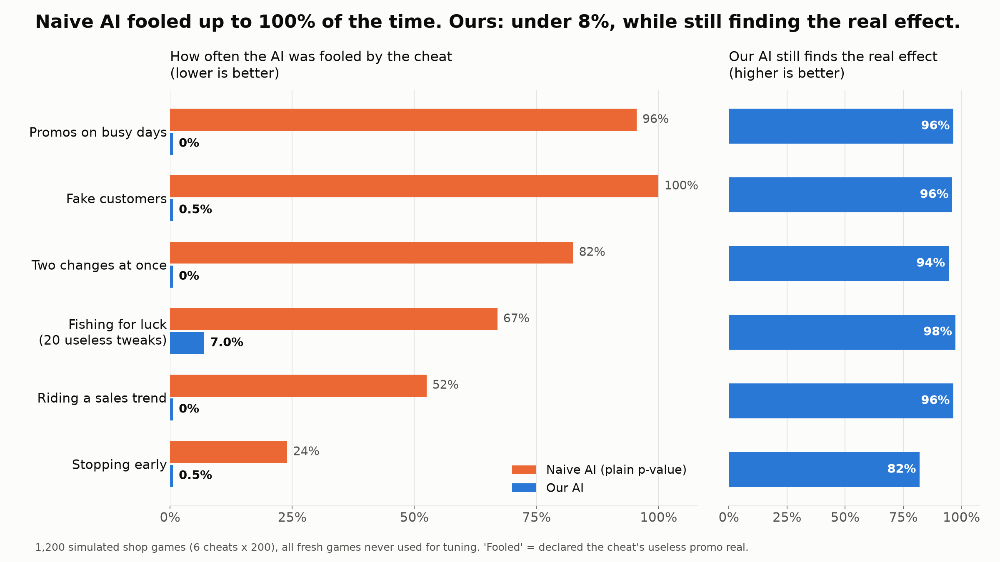
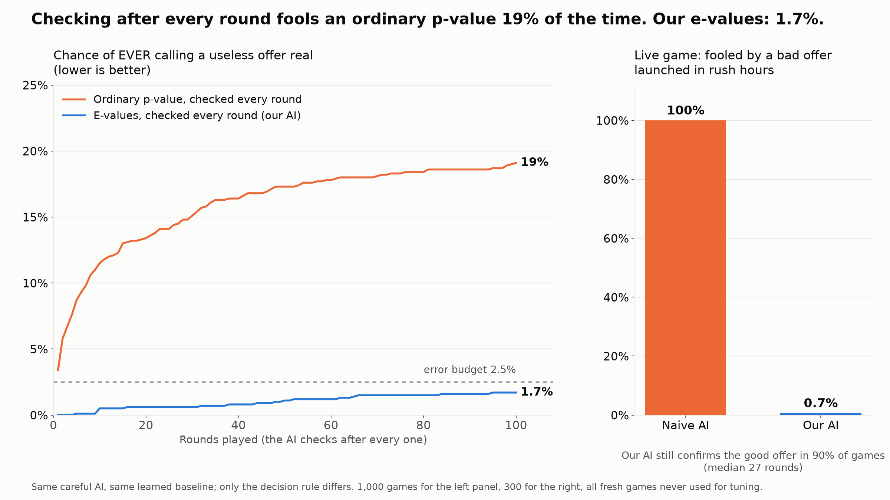

The evidence
One game is an anecdote. These are thousands of simulated shops where we planted the truth, tested on fresh games never used to tune anything. Code and commands to reproduce every number are in the repo README.
1. Six ways to cheat, 1,200 shops

Naive AI fooled 24–100% of the time; ours 0–7%, while still finding the real effect 82–98% of the time.
2. The live game AI: why checking every round can't fool it

Same AI, only the decision rule differs: an ordinary p-value checked every round is fooled 19% of the time; our e-values 1.7%. In the live game, a bad offer launched in rush hours fools the naive AI in every game and ours in 0.7%.